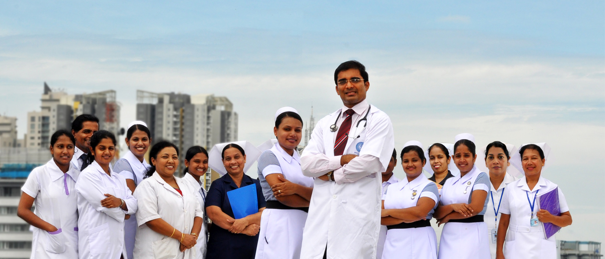
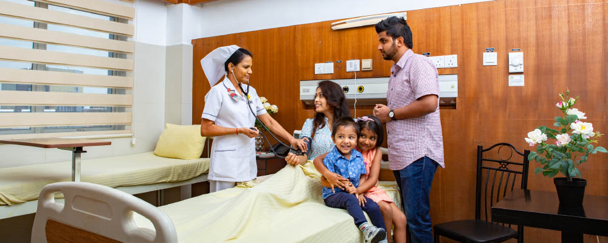

Hospital in Sri lanka
GOVERMENT HOSPITAL IN SRI LANKA

Private Hospitals in Sri lanka

MINISTRY OF HEALTH
SUWASIRIPAYA, No 385, Rev.
Baddegama Wimalawansa Thero Mawatha,
Colombo 10, Sri Lanka.
Telephone(General):
(+94)112 694033, (+94)112 675011,
(+94)112 675449, (+94)112 693493